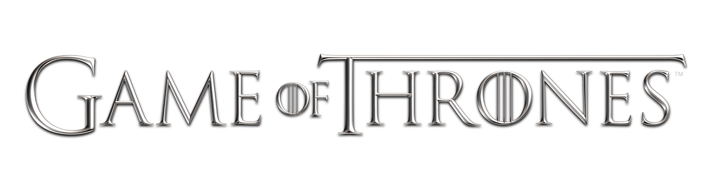
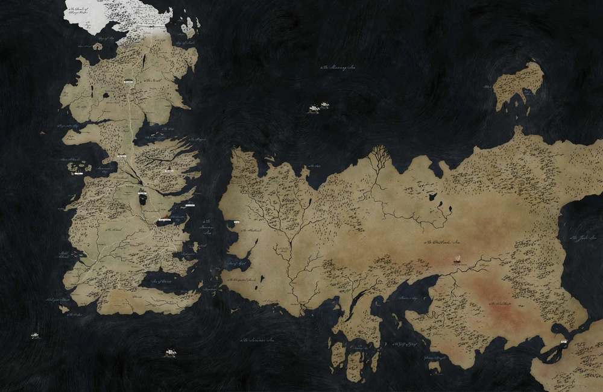

Le Monde Connu de Game of Thrones n'a aucun nom général ou officiel. Les personnages de l'histoire se réfèrent simplement à cela comme étant «le monde». Au moment de la série, le monde connu comprend quatre continents découverts : Westeros, Essos, Sothoryos et Ulthos, mais nous allons nous intéresser seulement aux deux continents les plus connus. Il existe également de nombreuses îles et archipels, y compris les Degrés de Pierre, les Îles d'Été et Ib.
